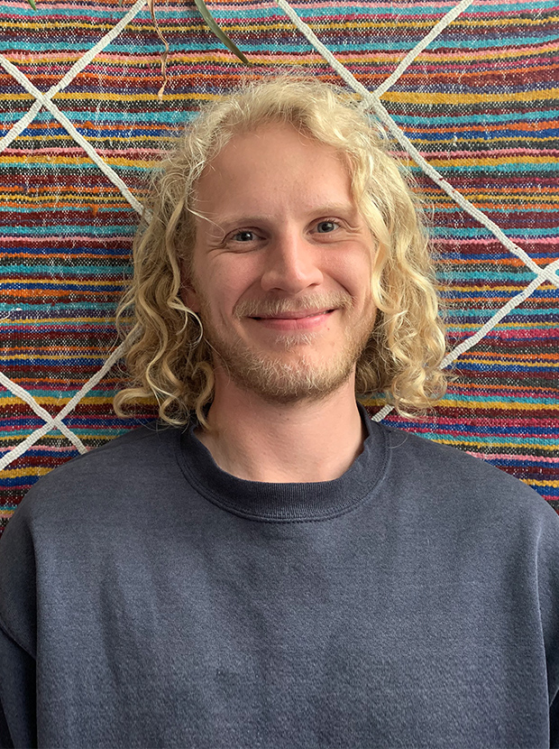

Email: bunnett at math.tu-berlin.de
TU Berlin
Institute of Mathematics
Straße des 17. Juni 136,
10623 Berlin, Germany
Office: MA 319
CV
arXiv-reader — I made this to save me time in the morning.
I'm a geometer, working at the interface of algebraic and discrete geometry. I work in moduli theory and like computational problems.
In 2024, I was a visiting scholar at the Isaac Newton Institute, University of Cambridge.
Otherwise, I'm a postdoc in the research group Algorithmic Algebra of Prof. Peter Bürgisser, before that, I was a lecturer at Makerere University, Kampala.
I did my Ph.D under the supervision of Prof. Victoria Hoskins at FU Berlin.